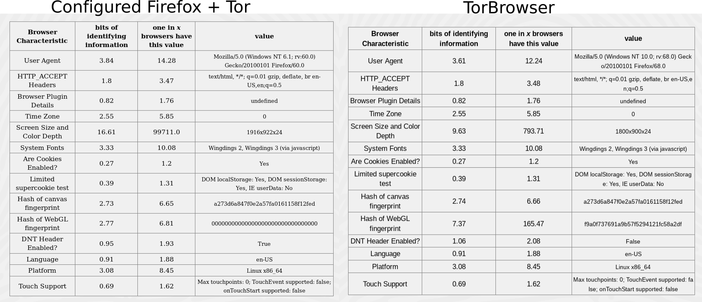
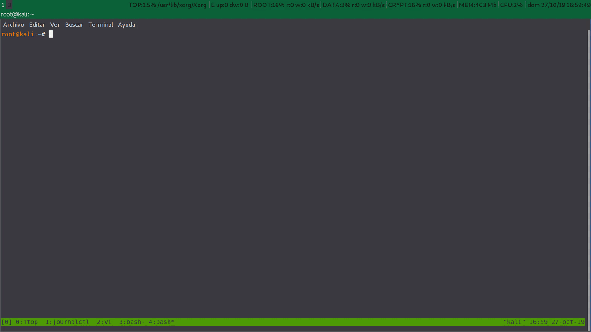

Firefox privacity: Configuration and script.
Table of contents
Setting.
Today to navigate with a little of privacy we can: Use a text browser like linx without features like java, videos, css, …, use torbrowser, or configure firefox to navigate as safely and privately as possible.
Backup.
The first thing we have to do to avoid losing our data is a copy of our firefox profile, it is under the user directory.
~/.mozilla/firefox/xxxxxxxx.default
root@kali:~# cp .mozilla/firefox/l50cihg0.default .mozilla/firefox/l50cihg0.default.bkp
We could also copy only the files that interest us as bookmarks or history.
Starting with the basics.
To raise our privacy when we browse, as our Arch Linux friends explain in Firefox Privacy and restoreprivacy, we will change the configuration in about:config or in the $home/.mozilla/firefox/$profile/prefs.js with the parameters:
- user_pref(“browser.safebrowsing.malware.enabled”, false);
- user_pref(“browser.safebrowsing.phishing.enabled”, false);
- user_pref(“dom.event.clipboardevents.enabled”, false);
- user_pref(“geo.enabled”, false);
- user_pref(“media.eme.enabled”, false);
- user_pref(“media.navigator.enabled”, false);
- user_pref(“media.peerconnection.enabled”, false);
- user_pref(“network.cookie.cookieBehavior”, 4);
- user_pref(“network.cookie.lifetimePolicy”, 2);
- user_pref(“network.dns.disablePrefetch”, true);
- user_pref(“network.prefetch-next”, false);
- user_pref(“privacy.firstparty.isolate”, true);
- user_pref(“privacy.resistFingerprinting”, true);
- user_pref(“privacy.trackingprotection.enabled”, true);
- user_pref(“privacy.trackingprotection.fingerprinting.enabled” , true);
- user_pref(“privacy.trackingprotection.cryptomining.enabled” , true);
- user_pref(“webgl.disabled”, true);
we will install some addons,
we will start firefox without a time zone,
root@kali:~# TZ=UTC firefox
root@kali:~#
we will remove hidden extensions for the entire system,
root@kali:~# ls -la /usr/lib/firefox-esr/browser/features/
total 5496
drwxr-xr-x 2 root root 319 sep 6 20:05 .
drwxr-xr-x 4 root root 163 sep 6 20:09 ..
-rw-r--r-- 1 root root 2603859 jul 10 00:13 activity-stream@mozilla.org.xpi
-rw-r--r-- 1 root root 8671 jul 10 00:13 aushelper@mozilla.org.xpi
-rw-r--r-- 1 root root 864581 jul 10 00:13 firefox@getpocket.com.xpi
-rw-r--r-- 1 root root 19037 jul 10 00:13 followonsearch@mozilla.com.xpi
-rw-r--r-- 1 root root 464592 jul 10 00:13 formautofill@mozilla.org.xpi
-rw-r--r-- 1 root root 5741 jul 10 00:13 jaws-esr@mozilla.org.xpi
-rw-r--r-- 1 root root 566768 jul 10 00:13 onboarding@mozilla.org.xpi
-rw-r--r-- 1 root root 1064261 jul 10 00:13 screenshots@mozilla.org.xpi
-rw-r--r-- 1 root root 9783 jul 10 00:13 webcompat@mozilla.org.xpi
root@kali:~#
root@kali:~# mv /usr/lib/firefox-esr/browser/features /usr/lib/firefox-esr/browser/features.bkp
and we will change the default search engines that firefox uses.
Configuring user.js.
As we see in users.js, when we start firefox the valid preferences that we have added to the user.js file are automatically copied to the prefs.js file.
To further raise the privacy of firefox we have the option to create our own user.js file. A good start is the pyllyukko. We will simply copy it after reading the [Problems and limitations] (https://github.com/pyllyukko/user.js#known-problems-and-limitations) and add our specific configuration lines.
//Mi proxy rules for tor
//
user_pref("network.proxy.no_proxies_on", "localhost, 127.0.0.1, 192.168.8.0");
user_pref("network.proxy.socks", "127.0.0.1");
user_pref("network.proxy.socks_port", 9050);
user_pref("network.proxy.type", 1);
// Remove time marks
user_pref("app.update.lastUpdateTime.addon-background-update-timer", 0);
user_pref("app.update.lastUpdateTime.blocklist-background-update-timer", 0);
user_pref("app.update.lastUpdateTime.browser-cleanup-thumbnails", 0);
user_pref("app.update.lastUpdateTime.experiments-update-timer", 0);
user_pref("app.update.lastUpdateTime.search-engine-update-timer", 0);
user_pref("app.update.lastUpdateTime.xpi-signature-verification", 0);
// Disable Kali bookmark
user_pref("distribution.Kali.bookmarksProcessed", true);
Result
We have a functional version of firefox and a little less exposed to crawls that will allow us to navigate with certain limitations.
We don’t have to confuse security with privacy, since they are different things. We are not configuring firefox to be more secure but to be less traceable. It is a topic for another post like hardening firefox and surfing safely.
Privacy tests
Now we can test if our browser is trackable. There are some online tests to test how unique our browser is and that we are exposing to third parties.
Links to test the privacy of our browser.
Comparing with torbrowser
Our firefox configuration+tor compared to torbrowser does not differ too much.


As we can see we have the Canvas Hash that gives us away …
Automating.
Script operation summary
The script creates a firefox_backup directory under the user’s $HOME/.mozilla/ directory, where it will download the addons, the user.js file and where it will backup the user’s firefox profiles.
You will install the addons for all users in /usr/lib/mozilla/extensions/{ec8030f7-c20a-464f-9b0e-13a3a9e97384}/ or for a single user in $HOME/.mozilla/firefox/xxxxxxxx.default/extensions. By default they will be installed for all users.
It will move the hidden addons of /usr/lib/firefox-esr/browser/features in case we want to recover them to /usr/lib/firefox-esr/browser/features.bkp, it will delete the pref file .js and will copy the user.js file with our preferences from the firefox_backup folder instead. To change the preferences we will have to delete $HOME/.mozilla/firefox/xxxxxxxx.default/user.js to copy again from the backup.
And firefox will start with UTC time zone.
On the other side we can change the user inside the script to start firefox with another different user that will be created only to contain the firefox data and then wil be deleted with all the content of the user. To download we will use /tmp to not lose downloaded data.
Script to navigate with firefox more privately.
Here my automation script to create a copy of firefox profiles, download and install addons automatically, remove prefs.js, hidden addons, download and install user.js and start firefox with the UTC time zone.
You can download the script from my public scripts.
And an example of execution.

What remains to be done
-
Investigate how to remove Canvas Hash.
-
Save our browsing history from sqlite after each session.
-
Start firefox with third user and functionalities for X. (Sound …)
-
Automate the change of the default search engines to use: -Duckduckgo -Startpage
back
References:
https://wiki.archlinux.org/index.php/Firefox/Privacy
https://github.com/pyllyukko/user.js
https://github.com/ghacksuserjs/ghacks-user.js
https://www.privacytools.io/browsers/#addons
https://restoreprivacy.com/firefox-privacy/
https://askubuntu.com/questions/73474/how-to-install-firefox-addon-from-command-line-in-scripts
http://jcarlosnorte.com/security/2016/03/06/advanced-tor-browser-fingerprinting.html
License: CC-BY-SA